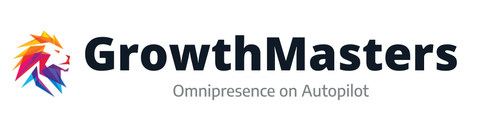
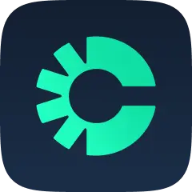
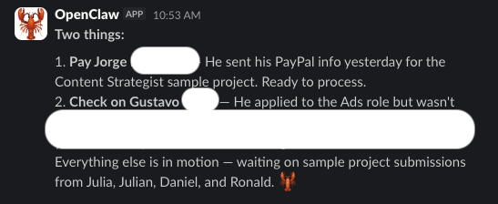

Tus Calls
Son Oro
Workshop 3: Convierte transcripts de calls en decks, landing pages, LinkedIn posts, ad copy y CRM intelligence
Juan Felipe Campos · GrowthMasters × 30x
Haces 20 calls por semana.
Todo ese conocimiento
desaparece
en notas que nadie lee.
La mina de oro en cada call
Para Ventas
- Pain points en palabras del prospect
- Objeciones recurrentes
- Buying signals + intencion revelada
- Menciones de competidores
- Presupuesto, timeline, criterios de decision
Para Marketing
- Lenguaje real del ICP
- Solicitudes de features frecuentes
- Temas recurrentes → ideas de contenido
- Testimoniales espontaneos
- Mensajes que resuenan vs que no
Para Product
- Jobs-to-be-done reales
- Workflows actuales del usuario
- Integraciones que piden
- Puntos de friccion con el producto
- Comparaciones con competidores
Arquitectura del Transcript Pipeline
Presentaciones de ventas
Con lenguaje del ICP
Liderazgo de pensamiento
200+ ads en 72h
Sentimiento, signals
 Granola
Gong
Granola
Gong
 Claude Code
Claude Code
 Vercel
Attio/Clarify
Vercel
Attio/Clarify
Paso 1: Extraccion Estructurada
De texto crudo a datos accionables
Lo que extraemos
- Decisiones: que se acordo?
- Tareas pendientes: quien hace que y para cuando?
- Pain points: que duele? En sus palabras.
- Objeciones: que los detiene?
- Buying signals: budget, timeline, urgency
- Menciones de competidores: que mas evaluan?
- Citas clave: frases textuales para contenido
Salida: JSON estructurado
De una call a 5 outputs — automaticamente
DEMO: Transcript → JSON Estructurado
Lo que vamos a hacer:
- Tomar un transcript real de una call de ventas
- Claude Code lo procesa y extrae insights
- Salida: JSON con pain points, objeciones, buying signals, citas clave
- Estos datos alimentan todo lo que viene despues
Paso 2: Transcript → Deck de Venta
Que cambia vs un deck generico?
- Pain points en las palabras del prospect
- Solucion enmarcada en sus desafios especificos
- Caso de exito emparejado por industria + dolor
- Pricing alineado con presupuesto revelado
- Proximos pasos basados en lo que acordaron
De 3 horas a 30 segundos
DEMO: Transcript → Mini-Deck de 5 Slides
Lo que vamos a hacer:
- Tomar los insights extraidos del demo anterior
- Claude Code genera 5 slides: Desafio, Enfoque, Caso de Exito, Inversion, Proximos Pasos
- Cada slide usa lenguaje del prospect
- Deploy automatico en Vercel con URL unica
Paso 3: Transcript → Landing Page
Copy que suena como tu ICP — porque viene de sus propias palabras
Estructura de la landing
- Hero: titular desde el pain point principal
- Problema: 3 pain points del ICP
- Solucion: como resuelves cada uno
- Prueba social: estadisticas + testimoniales
- CTA: agendar una call / empezar gratis
Por que funciona
- El lenguaje no es inventado — viene de calls
- Las objeciones se pre-responden en la pagina
- Los pain points son los reales, no los asumidos
- Cada vertical puede tener su propia landing
5 calls con CTOs → landing para CTOs. 5 calls con VPs Marketing → landing para VPs Marketing.
DEMO: Transcript → Landing Page Deployed
Lo que vamos a hacer:
- Tomar pain points y objeciones del transcript
- Claude Code genera HTML completo: hero, problem, solution, CTA
- Styling responsive listo para usar
- Deploy en Vercel — live URL en 60 segundos
Paso 4: Transcript → Thought Leadership
Asi generamos 500M+ views — escuchando al mercado
El Motor de Contenido
Tipos de posts que salen
- Post de patron: "Hable con 5 VPs esta semana y todos dijeron lo mismo..."
- Toma contraria: insight que contradice la sabiduria convencional
- Post de framework: problema recurrente → solucion sistematizada
- Post de historia: anecdota de una call (anonimizada)
Cadencia: 3 posts/semana. El AI genera, el humano edita y publica.
DEMO: 5 Transcripts → 3 LinkedIn Posts
Lo que vamos a hacer:
- Alimentar 5 transcripts (reales o de muestra) a Claude Code
- Identificar los 3 temas mas recurrentes
- Generar un post por tema: hook, body, CTA
- Salida: 3 posts listos para editar y publicar
Paso 5: CRM Intelligence Post-Call
Cada call actualiza automaticamente el registro del deal
Que se actualiza
- Puntaje de sentimiento: positivo / neutral / en riesgo
- Proximos pasos: extraidos de la call
- Menciones competitivas: que estan evaluando
- Champion ID: quien nos apoya internamente
- Signals revelados: presupuesto, timeline, criterios de decision
- Deal health: re-clasificar Green/Yellow/Red
El flujo
DEMO: Auto-Update CRM Post-Call
Lo que vamos a hacer:
- Tomar el transcript procesado
- Claude Code identifica: sentimiento, proximos pasos, menciones de competidores, champion
- Auto-actualizacion del registro del deal en Attio/

Clarify - Re-clasificar deal health basado en signals revelados

Notificacion automatica post-call en Slack
MCP Tools del Transcript Agent
7 tools. Un transcript entra, multiples salidas salen. El AOP orquesta todo.
El AOP del Transcript Agent
Rutina Post-Call (automatica)
- T+0 min — ingest_transcript() desde Granola
- T+1 min — extract_insights() → JSON estructurado
- T+2 min — update_crm_from_call() → registro del deal actualizado
- T+3 min — Notificar en Slack: resumen + tareas pendientes + signals
Cadencia de Contenido (semanal)
- Viernes PM — Batch: 5 transcripts de la semana → generate_social_posts(3)
- Mensual — Insights acumulados → generate_landing_page() refresh
- Trimestral — Insights acumulados → generate_ad_copy() para nuevas campanas
Escalacion: si sentimiento es "en riesgo" → notificar manager. Si mencion competitiva es nueva → actualizar battlecard.
EJERCICIO: Procesa tu Primer Transcript
Haz esto ahora:
- Toma un transcript real (Granola, Gong, o el sample que tenemos)
- Pide a Claude Code que extraiga insights como JSON
- Genera una de estas salidas (elige tu favorita):
- a) Mini-deck de 5 slides
- b) Landing page deployed en Vercel
- c) 3 LinkedIn posts
- Bonus: auto-update tu CRM con los insights
15 minutos. Si no tienes un transcript real, usa el sample en demos/03-transcripts/
El Flywheel Completo
Construye la herramienta. Escribe el AOP.
Exponlo via MCP. Deja que el AI lo ejecute.
Evaluar → Decidir → Actuar → Ajustar → Repetir